Токио · сэнто · бани
Семь сэнто Токио: старые городские бани, которые снова собирают район
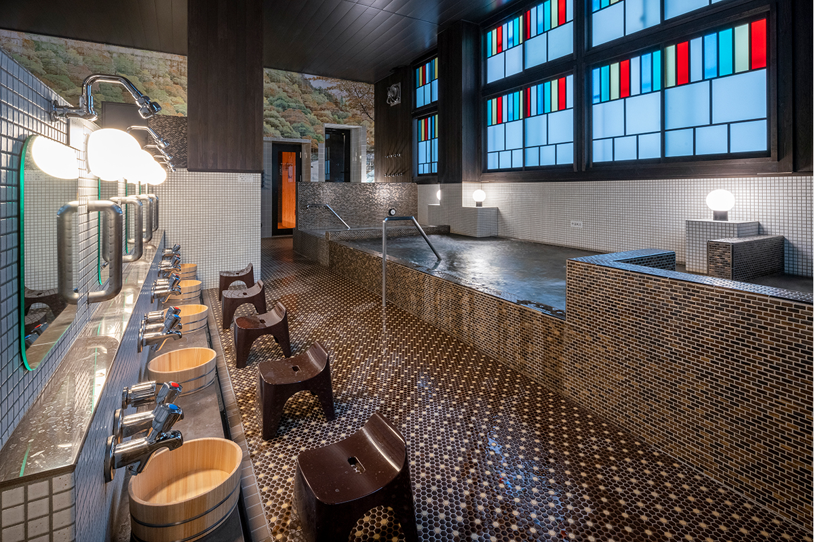
Сэнто, общественная баня, когда-то была в Японии частью городского хозяйства: мыться ходили туда, потому что ванны дома не было. В Токио всё больше бань становятся местом, где встречаются соседи. Вот семь из них: три, вокруг которых живёт район, и четыре старые бани, обновлённые без потери истории.
Сэнто
Баня как место встречи
Ванна давно стоит почти в каждой квартире, и сэнто перестали быть необходимостью. Но в Токио многие бани нашли себе новую роль: здесь пьют пиво после парной, слушают музыку, устраивают ярмарки и просто разговаривают с соседями. Семь бань для этой подборки выбрал фотограф, который много лет снимает токийские сэнто. Первые три он ценит за то, что вокруг них собирается район. Остальные четыре бережно хранят историю, но их пространство и оборудование переделаны под сегодняшний день.
Несколько слов, которые пригодятся в любой из них. Бандай это высокая будка у входа, откуда смотритель видит обе раздевалки, мужскую и женскую. Пэнки-э это большая роспись масляной краской на стене банного зала, чаще всего с горой Фудзи. Многие старые бани построены в стиле мия-дзукури: с изогнутой черепичной крышей, как у храма. Входной билет в 2024 году стоил для взрослого 520 иен, сауна оплачивается отдельно. Мыло и шампунь почти везде есть на месте, полотенце можно взять напрокат.
Сумида
Koganeyu: бар с пивом у входа
Koganeyu стоит в квартале Тайхэй в районе Сумида, недалеко от станции Кинситё. Управление старой баней приняла супружеская пара, которая держит соседнее сэнто в Осиагэ, и в 2020 году её перестроили. Общую концепцию придумала художница, которая живёт и работает в этом районе, интерьер спроектировал архитектор.
У входа вместо привычной стойки устроены диджейский пульт и пивной бар. В 2023 году баня открыла свою пивоварню BATHE YOTSUME BREWERY и стала наливать собственное крафтовое пиво.
«Стойка с диджейским пультом и баром выглядит смело, но это обычное место, где болтают соседи всех возрастов»
фотограф, снимающий сэнто
Воду из подземного источника пропускают через умягчитель, и она получается очень мягкой. Бассейнов три, у каждого своя температура: горячий, средний с травяным настоем и тёплый с углекислой водой. В мужской сауне стены целиком выложены минеральным камнем бакухансэки, а пар подаётся автоматически, в женской воду на камни льют сами. Подробнее о бане рассказывает отдельная статья: Koganeyu.
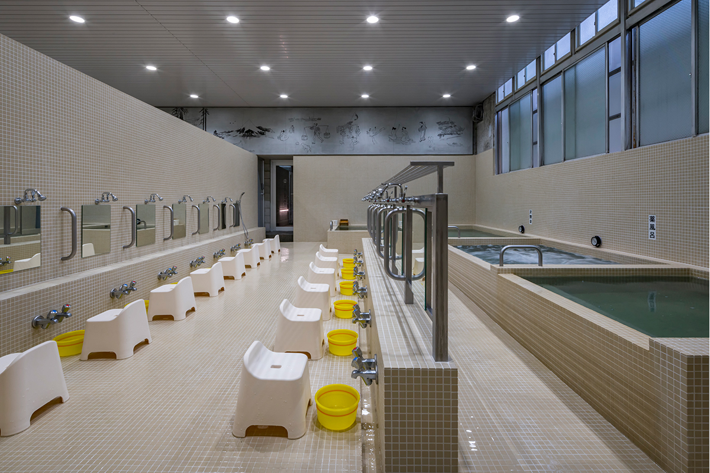
Koganeyu
- Адрес
- Токио, район Сумида, Тайхэй, 4-14-6
- Телефон
- +81 3-3622-5009
- Часы работы
- 6:00–9:00, 11:00–24:30 (в субботу днём с 15:00)
- Выходные
- второй и четвёртый понедельник месяца; по средам мужская и женская половины меняются местами
- Цены / Вход
- взрослые 520 иен, школьники средних классов 420 иен, младших классов 200 иен, дошкольники 100 иен (90 минут); сауна в будни для женщин +330 иен, для мужчин +530 иен, в субботу и воскресенье для женщин +350 иен, для мужчин +580 иен (2 часа); набор полотенец напрокат 200 иен
- Сайт
- koganeyu.com
Кита
«Такиногава Инари-ю»: баня из кино и соседский клуб
Баню «Инари-ю» в Такиногаве, на севере Токио, открыли в 1913 году, а её нынешнее здание построено в 1930 году в стиле мия-дзукури, с тройной крышей. Здесь снимали фильм «Римские термы» и другие картины. В 2019 году здание и соседний длинный дом-нагая, где когда-то жили работники бани, внесли в государственный реестр культурных ценностей.
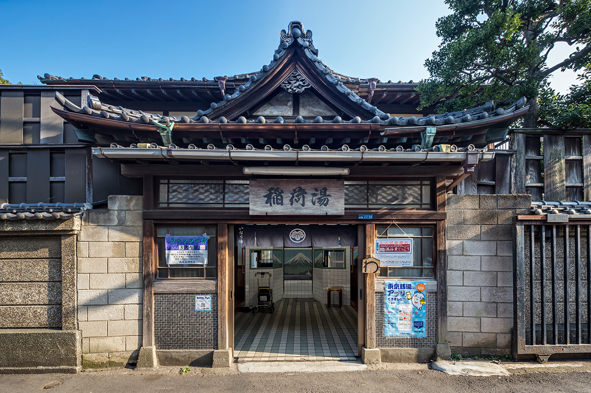
В 2022 году нагаю перестроили, и в ней появился соседский клуб «Инари-ю нагая». В основном по выходным там проходят самые разные мероприятия, и дом стал местом, где отдыхает весь квартал.
«Хороша не только архитектура. Хозяйка бани очень внимательна к гостям, и это тоже притягивает»
фотограф, снимающий сэнто
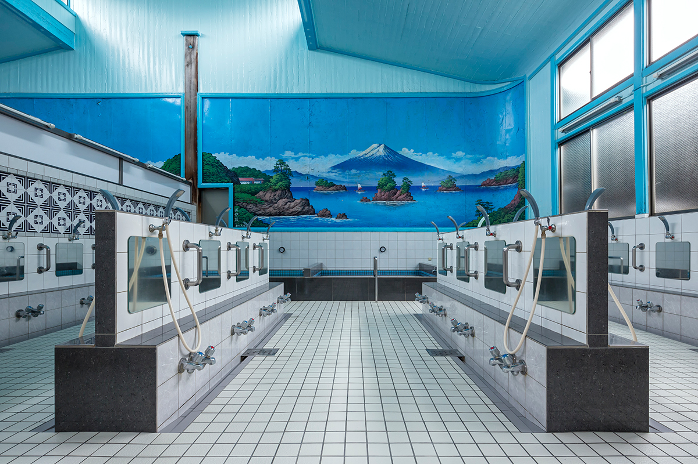
«Такиногава Инари-ю»
- Адрес
- Токио, район Кита, Такиногава, 6-27-14
- Телефон
- +81 3-3916-0523
- Часы работы
- 15:00–24:30
- Выходные
- среда; раз в месяц два выходных подряд
- Цены / Вход
- взрослые 520 иен, школьники 200 иен; набор полотенца, шампуня и мыла 150 иен, маленькое полотенце бесплатно
Комаэ
«Комаэ-ю»: кафе вместо стойки
Сэнто в городе Комаэ, на юго-западе Токио, открылось в 1955 году. В 2023 году его обновил хозяин в третьем поколении, выпускник художественного вуза. Он хотел сделать такую баню, в которой ему самому было бы приятно работать, и пригласил того же архитектора, что перестраивал Koganeyu.
Стойка у входа заодно работает как кафе-бар SIDE STAND, и зайти туда можно, даже не собираясь в баню: здесь наливают крафтовое пиво и безалкогольные напитки, подают закуски. На веранде-энгаве регулярно устраивают маленькие рынки.
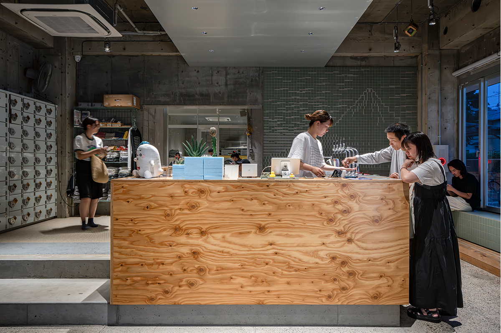
«Здесь видно, какой может быть баня, когда она становится центром жизни района»
фотограф, снимающий сэнто
Купаются в богатой минералами подземной воде, в которой есть и подрусловые воды реки Тамагава, и родники с откоса террасы Кокубундзи. Её любят за мягкость. Есть и сауна с автоматической подачей пара, и бассейн с холодной водой. О бане и её архитектуре подробнее в статье «Комаэ-ю».
«Комаэ-ю»
- Адрес
- Токио, Комаэ, Хигаси-Идзуми, 1-12-6
- Телефон
- +81 3-3489-3881
- Часы работы
- 13:00–23:00
- Выходные
- вторник
- Цены / Вход
- взрослые 520 иен, школьники 200 иен, дошкольники 100 иен, сауна с полотенцем +680 иен; банное полотенце напрокат 150 иен, маленькое 50 иен
- Сайт
- komaeyu.com
Кото
«Фукагава онсэн Токива-ю»: под храмовой крышей появился онсэн
Старое здание в стиле мия-дзукури, которое любят с самого открытия бани, сохранили, а всё остальное в марте 2023 года обновили. Для бани пробурили собственную скважину с природной горячей водой и сменили название. Молодой хозяин в третьем поколении предложил много нового: бассейн онсэна под открытым небом, ванну с очень насыщенной углекислой водой, ванну, в которой лежат, «шёлковую» ванну с мельчайшими пузырьками, холодный бассейн и сауну.
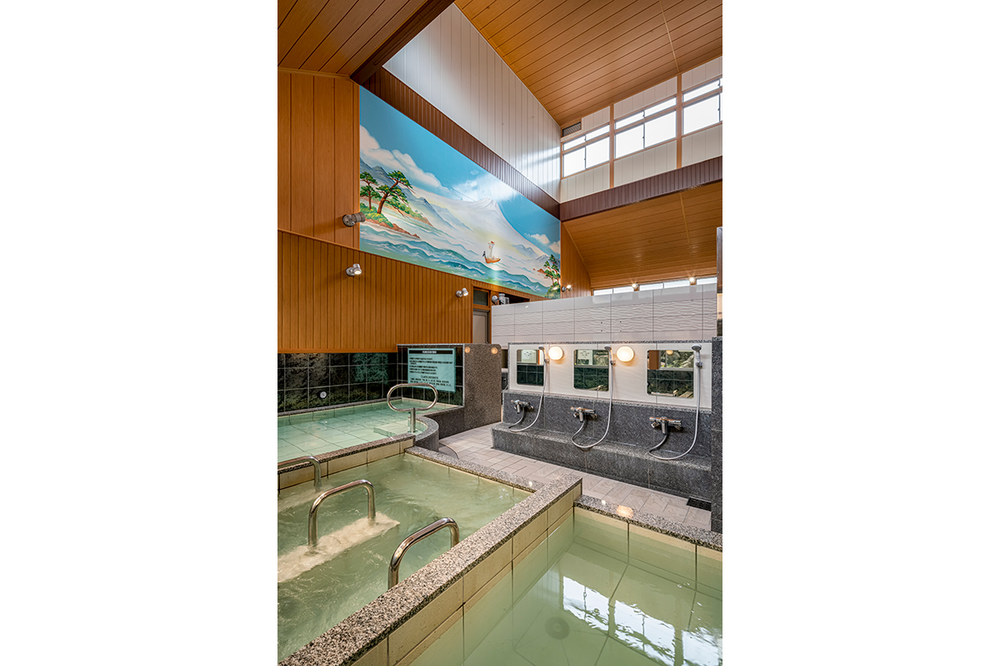
«Под кессонным потолком и черепичной крышей чувствуется солидность старой бани, а купаешься в совсем новых ваннах»
фотограф, снимающий сэнто
Вокруг бани много современных зданий, и на их фоне она особенно заметна. После купания фотограф советует отдохнуть в одном из кафе соседнего квартала Киёсуми-Сиракава.
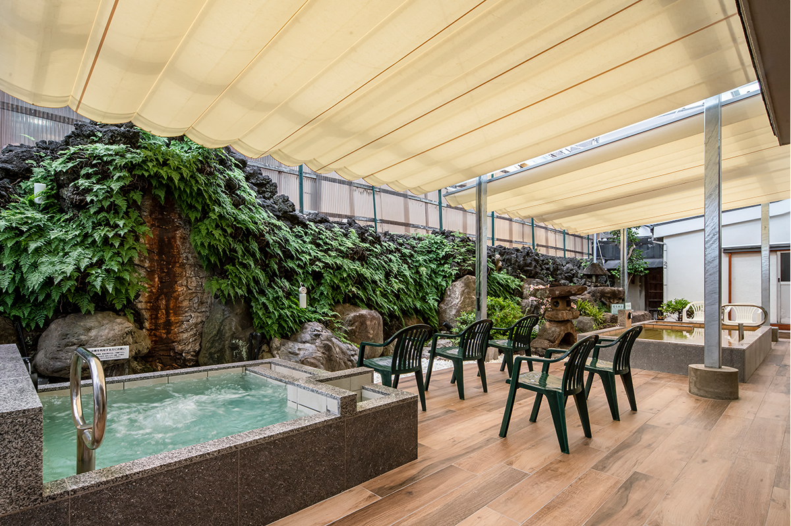
«Фукагава онсэн Токива-ю»
- Адрес
- Токио, район Кото, Токива, 2-3-8
- Телефон
- +81 3-3631-9649
- Часы работы
- 12:00–24:30
- Выходные
- четверг (в праздники открыто)
- Цены / Вход
- взрослые 520 иен, школьники 200 иен, дошкольники 100 иен, сауна +500 иен; набор полотенец напрокат 150 иен, фен 20 иен за 3 минуты
Сибуя
«Кайрё-ю»: тёмный зал и кит на стене
Баня работает с 1916 года, а в 2018 году её перестроили по проекту архитектора. Мягкая непрямая подсветка и роспись современного художника сделали зал стильным. Здесь проходят музыкальные вечера и совместные проекты с компаниями, и, не в последнюю очередь благодаря району, баню любит молодёжь, которая следит за всем новым.
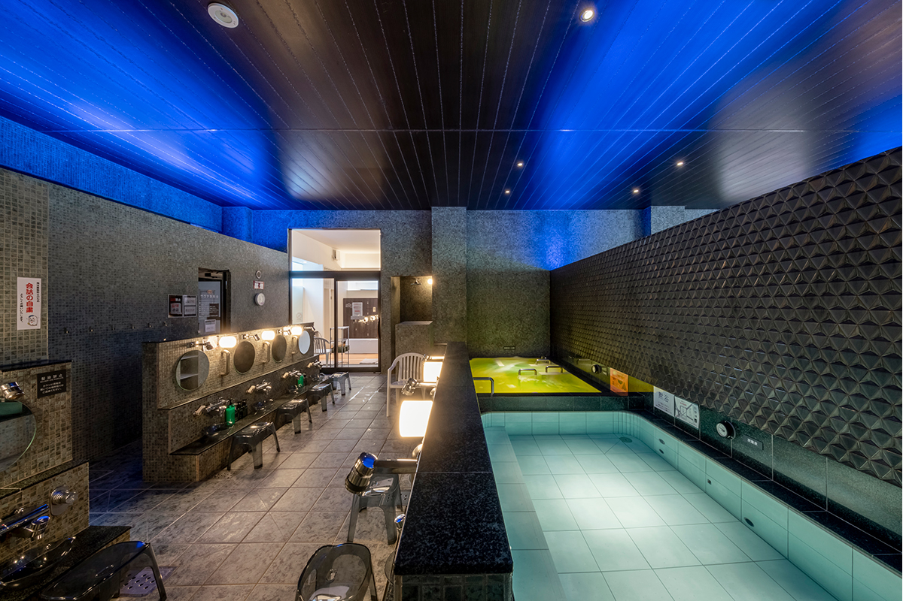
«В 2022 году расширили холодный бассейн и сауну и сделали место для отдыха под открытым небом, так что отдыхать здесь стало ещё приятнее»
фотограф, снимающий сэнто
В мужской сауне после перестройки поставили конвекционную печь с автоматической подачей пара, в женской работает инфракрасная сауна.
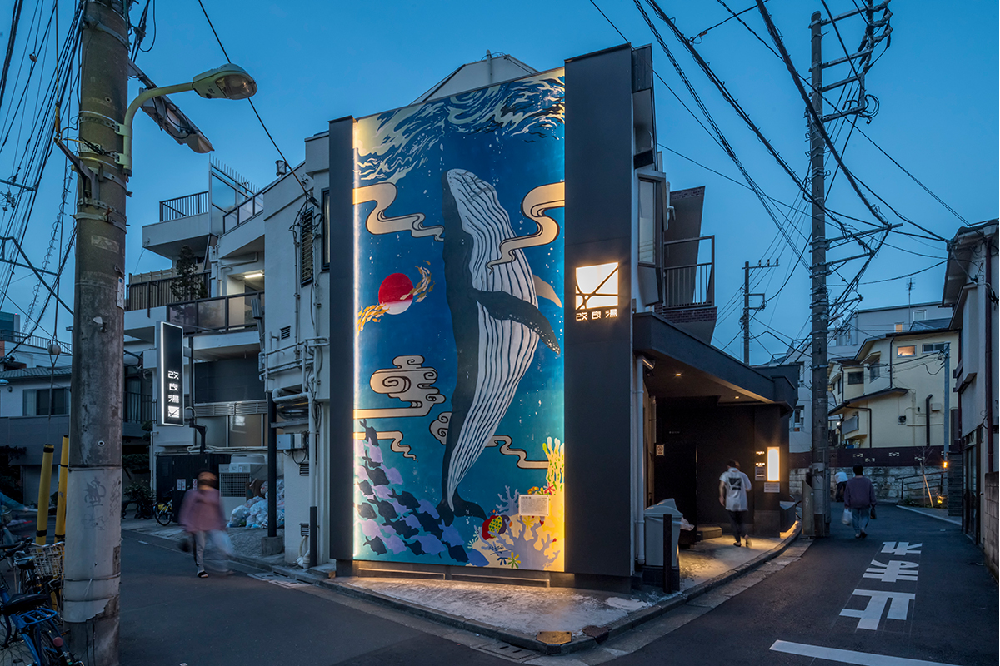
«Кайрё-ю»
- Адрес
- Токио, район Сибуя, Хигаси, 2-19-9
- Телефон
- +81 3-3400-5782
- Часы работы
- 12:00–23:30
- Выходные
- суббота
- Цены / Вход
- взрослые 520 иен, школьники средних классов 400 иен, младших классов 200 иен, дошкольники 80 иен, сауна с банным полотенцем +450 иен; полотенце напрокат 150 иен, фен 20 иен за 3 минуты
- Сайт
- kairyou-yu.com
Тосима
«Госики-ю»: баня, которая лечит душу
Название бани связано с храмом Мэдзиро-Фудо неподалёку: это один из пяти храмов «Госики-Фудо», «Фудо пяти цветов». Баню открыли в 1952 году. Через 70 лет её принял хозяин в третьем поколении и вместе с архитектором полностью перестроил под идею «современного тодзиба», места, куда в старину ездили лечиться на воды.
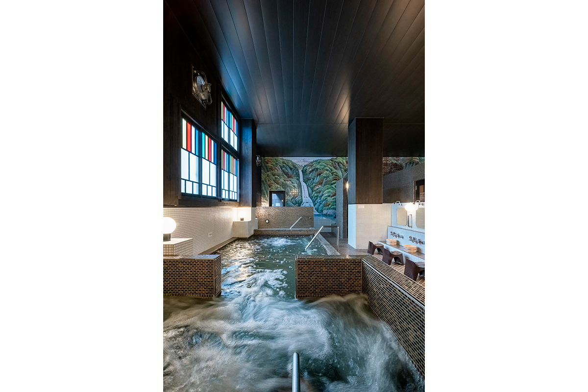
«До того как принять семейное дело, хозяин сам приходил сюда отдохнуть. Он считает, что дальше роль бани в том, чтобы лечить душу, и так её и ведёт»
фотограф, снимающий сэнто
В саунах стоят инфракрасные печи: в мужской 100 °C, в женской 90 °C. Есть и холодный бассейн с подземной водой, и место для отдыха на открытом воздухе.
«Госики-ю»
- Адрес
- Токио, район Тосима, Мэдзиро, 5-21-4
- Телефон
- +81 3-3952-7237
- Часы работы
- 16:00–24:00 (в субботу и воскресенье с 15:00)
- Выходные
- среда
- Цены / Вход
- взрослые 520 иен, школьники 200 иен, дошкольники 100 иен, сауна +400 иен; набор полотенец напрокат 100 иен, маленькое полотенце 50 иен
Кацусика
«Канамати-ю»: новое ретро
Здание в стиле мия-дзукури стоит прямо на торговой улице квартала Канамати. В 2021 году его полностью перестроил хозяин в четвёртом поколении. Он сохранил деревянный каркас и высокий потолок и назвал свою идею «новым ретро».
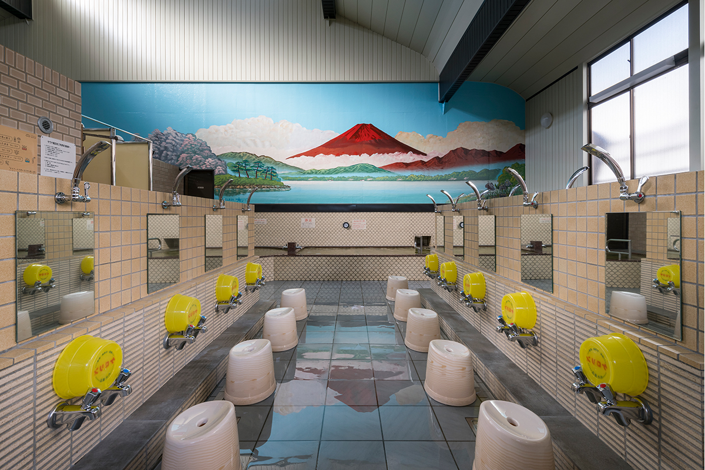
«Старый бандай оставили как экспонат, и в этом видна любовь к зданию и к семейному делу. Хозяин хочет оживить свой район, это один из тех, кто поведёт сэнто дальше»
фотограф, снимающий сэнто
В сауне пар идёт от ароматной воды. Она бывает то мужской, то женской, а в дни, которые оканчиваются на пятёрку, отдана женщинам. Снаружи есть место для отдыха на свежем воздухе.
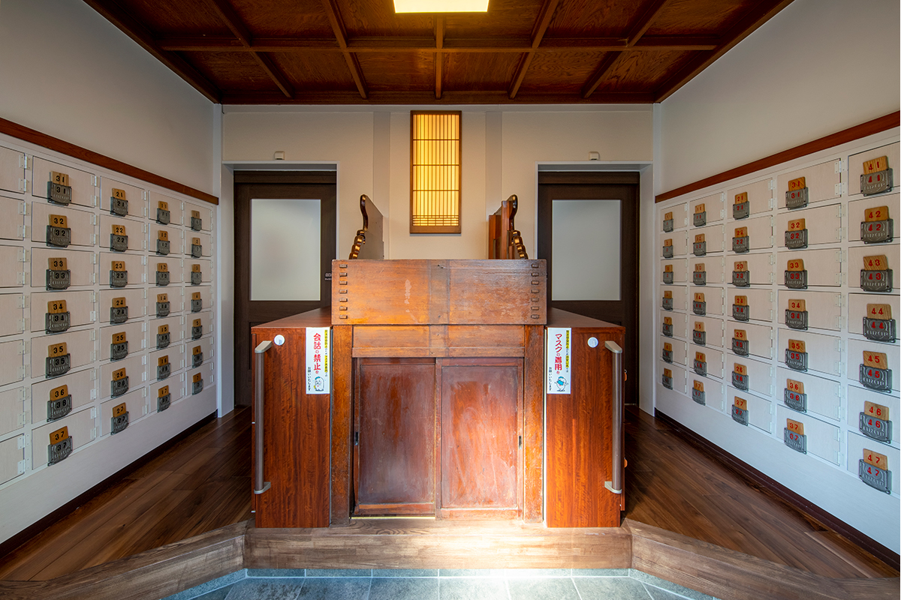
«Канамати-ю»
- Адрес
- Токио, район Кацусика, Канамати, 5-14-9
- Телефон
- +81 3-6326-3805
- Часы работы
- 15:30–22:30
- Выходные
- четверг, а также вторая и четвёртая пятница месяца
- Цены / Вход
- взрослые 520 иен, школьники средних классов 400 иен, младших классов 200 иен, дошкольники 100 иен, сауна +300 иен; набор с полотенцем, шампунем и мылом 150 иен
Фото: Котаро Имада.